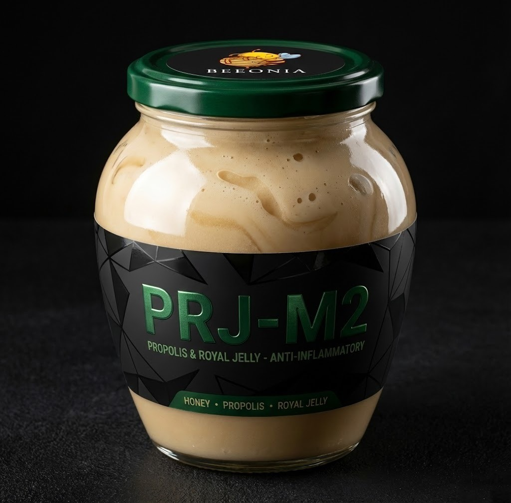
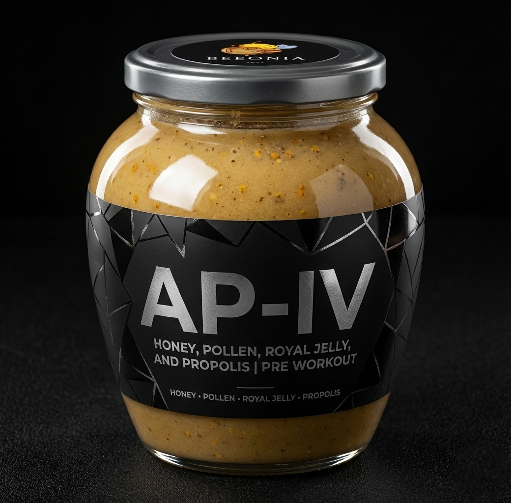

We're dedicated to giving you the excellence to personal, sustainable, and safe bee product.
PRODUCTS

Pine Honey
Raw, Unfiltered - Izmir

Pine Honey
Raw, Unfiltered - Izmir

Hayıt Balı
Natural Extract
Çam Balı
Homeros Valley

Energy Mix
Natural - Organic
GALLERY
ABOUT
At BEEONIA, we work to deliver the highest quality bee products from nature to your table.
All our products are produced using sustainable methods at the foothills of Yamanlar Mountain, Izmir.
02We make a difference with our passion for beekeeping and our scientific approach.
Every jar of honey is carefully prepared for your family's health.
04We support healthy living with our natural and pure products.
WHO WE ARE
HÜSEYİN KOCAKUŞAK
Molecular Biology & Genetics Master's Degree
OSMAN FALAKALI
Retired Banker
MEHMET KOCAKUŞAK
Retired Banker
MÜŞTERİ YORUMLARI
Organik ve doğal ürün severlere şiddetle tavsiye ediyorum. Harika bir deneyim!
SIK SORULAN SORULAR
Arı kolonilerinin uzun vadeli sağlığı ve verimliliği, çoklu stres faktörlerinin eş zamanlı yönetimine bağlıdır. Bilimsel literatür, koloni kayıplarının tek bir etkenden ziyade beslenme yetersizliği, patojen yükü, çevresel toksinler ve iklim değişkenliği gibi faktörlerin kümülatif etkileşiminden kaynaklandığını ortaya koymaktadır.
Bu nedenle kolonilerimize kışlık besin olarak kendi ürettikleri balı bırakıyoruz; yapay şeker şurubu kullanmıyoruz. Koloninin doğal dinamiklerine saygı gösteren, stres faktörlerini minimize eden bir üretim modeli uyguluyoruz.
Tek bir parametreye (örneğin nem veya HMF değeri) dayalı kalite değerlendirmesi yanıltıcı olabilir. Kapsamlı bir analiz; prolin içeriği (olgunluk göstergesi, >180 mg/kg), diastaz aktivitesi (enzim bütünlüğü, >8 Schade), elektriksel iletkenlik (mineral profili) ve toplam fenolik madde içeriğini birlikte değerlendirmelidir.
Bunların ötesinde, biz arı ve insan sağlığını koruyan bir üretim anlayışı benimsiyoruz: akarisit, pestisit ve mikroplastik kalıntısı içermeyen bal üretimi. Çünkü gerçek kalite, yalnızca balın kimyasal kompozisyonunda değil, üretim sürecinin bütünlüğünde yatar.
Isıl işlem, balın enzimatik yapısını doğrudan etkiler. Diastaz aktivitesi 49°C üzerindeki sıcaklıklarda belirgin şekilde azalmaya başlar; 65°C'de 5 saat maruziyetle yaklaşık %60 kayıp yaşanır. İnvertaz enzimi ısıya daha duyarlıdır: 75°C'de 24 saatlik ısıtmayla aktivite %85-95 oranında düşer.
Aynı zamanda sıcaklık artışı, potansiyel genotoksik etkisi bildirilen HMF (hidroksimetilfurfural) oluşumunu hızlandırır. Balın biyoaktif bileşenlerinden faydalanmak için 40°C altındaki içeceklere eklenmesi veya ayrı tüketilmesi önerilir.
Kristallenme, balın doğal bir fiziksel sürecidir ve kalite bozulması göstergesi değildir. Aksine, işlenmemiş, ısıl müdahale görmemiş balın karakteristik özelliğidir. Kristallenme hızı esas olarak fruktoz/glukoz (F/G) oranına bağlıdır: F/G oranı <1.11 olan ballar hızlı kristallenir (haftalar içinde), F/G >1.33 olan ballar aylarca hatta yıllarca sıvı kalabilir.
| Bal Türü | F/G Oranı | Kristallenme Süresi |
|---|---|---|
| Kolza (Kanola) | 0.95-1.00 | 2-4 hafta |
| Ayçiçeği | 1.02-1.08 | 1-3 ay |
| Kestane | 1.35-1.55 | 12-24 ay |
| Akasya | 1.45-1.70 | 18+ ay |
Glukoz/su (G/W) oranı da belirleyicidir: G/W >2.0 olduğunda kristallenme hızlı ve tam gerçekleşir, <1.7 olduğunda yavaşlar. Kristallenmiş balı 40°C altında su banyosunda ısıtarak akışkan hale getirebilirsiniz.
Varroa destructor, günümüzde koloni kayıplarının en önemli biyotik faktörlerinden biridir. Ancak mücadelede kullanılan sentetik akarisitlerin (amitraz, coumaphos, tau-fluvalinate) hem arı sağlığı hem de bal kalitesi üzerinde belgelenmiş olumsuz etkileri bulunmaktadır.
Balmumunda Birikim ve Bala Geçiş
Sentetik akarisitler lipofilik yapıları nedeniyle balmumunda birikim gösterir. Coumaphos'un balmumundaki yarı ömrü 115-346 gün arasında değişir ve eritme işlemiyle bile tam olarak uzaklaştırılamaz. Bu kalıntılar balmumundan bala ve kuluçka hücrelerine difüzyonla geçebilir.
Erkek Arı Üreme Fizyolojisi Üzerindeki Etkiler
Gelişim döneminde akarisitlere maruz kalan erkek arılarda sperm canlılığı önemli ölçüde azalır. Coumaphos ve fluvalinate kontaminasyonlu balmumunda yetiştirilen dronelarda sperm canlılığı kontrol grubuna kıyasla düşük bulunmuştur.
Kraliçe Sağlığı ve Koloni Geleceği
Coumaphos'un subletal dozları (100 ppm), spermatheca'da depolanan spermin canlılığını %33 oranında azaltma eğilimi göstermiştir. Akarisitlere maruz kalan kraliçelerde detoksifikasyon, bağışıklık ve gelişim ile ilişkili genlerin ekspresyonunda down-regülasyon saptanmıştır.
Mücadele yöntemlerimiz hakkında detaylı bilgi için bizimle iletişime geçebilirsiniz.